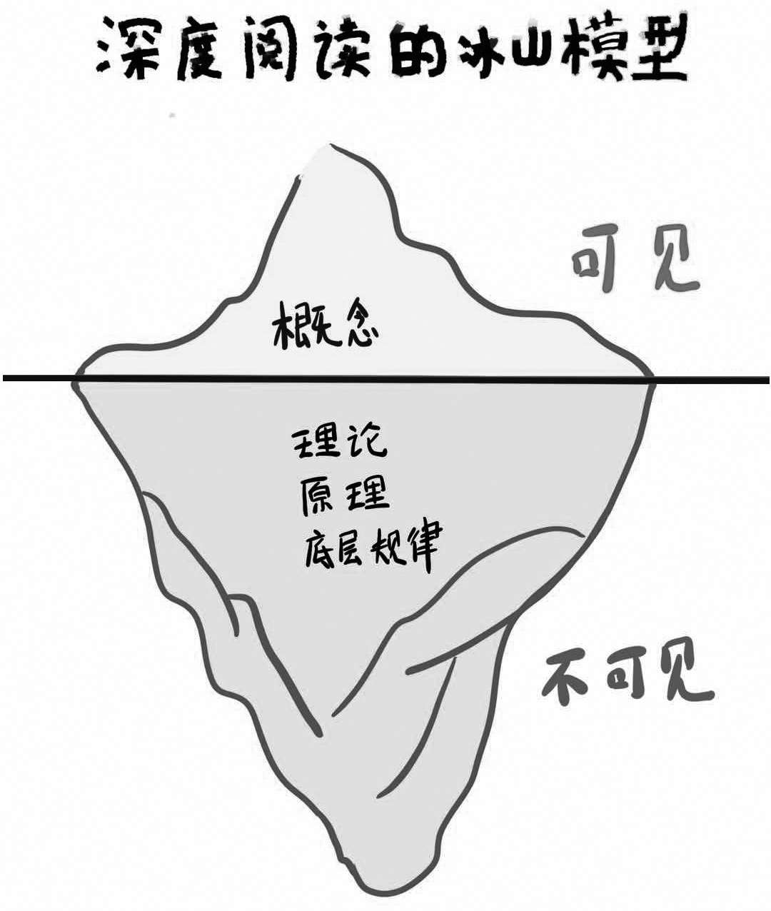

村上春树在他的新书《假如真有时光机》中写道：“飞抵哥本哈根大约需要十个半小时，从那里到雷克雅未克（冰岛首都）还得再飞将近三个小时，加起来是一次相当漫长的旅行，我在旅途中读完了四本书。”
十三个半小时的飞行，除去中途转机和片刻休息时间，村上春树能读完四本书，算下来他差不多平均3小时便可读完一本书。那么你呢？你读一本书需要多长时间？一周？一个月？还是更长？按照你的速度，一年可以读几本书？会超过10本吗？
第十六次全国国民阅读调查结果显示，2018年我国成年人人均纸质图书阅读量仅为4.67本，村上春树一趟飞行的阅读量几乎就可以赶上这个数据；而世界人均阅读量第一的以色列，其成年人的人均纸质图书阅读量更是多达60本。在我看来，造成这些差距的原因除了我国国民读书意识不强之外，还在于我们从小就缺少快速阅读的训练。
心理学上有一个概念叫作“心理盲点”，是指我们视而不见、考虑不周的东西，这些盲点的存在一定程度上会导致我们产生错误的认知和行为。事实上，对于读书这件事，阅读速度缓慢归根结底也是因为我们存在关于读书的心理盲点，也就是对读书的认识欠妥。以下是三个普遍存在的错误阅读认知：
第一，阅读理念要么没有“包袱”，要么“包袱”太重。读书没有“包袱”，即没有明确的阅读目的。假如你今天有时间，便拿起一本书翻阅，完全不在意内容是什么，也不在意自己应该从这次阅读中取得什么收获，纯粹是为了读书而读书。那么这种阅读状态就像驾着一叶小舟，漫无目的地漂泊在茫茫大海上，漂到哪儿算哪儿。看似你每天花了不少时间，但真实的阅读效果却差强人意，经常读着读着，思绪便飘到了九霄云外，不知书中所云，以至于读到最后一行，又完全忘了前面的内容，于是只好返回阅读，周而复始，读书的速度自然快不起来。
读书“包袱”太重，即阅读是为了记住更多的内容。许多人认为阅读就是把书的全部内容装进脑子里，因此在阅读时总是想着将内容全部复制下来。但如果阅读的目的仅仅是记住一本书的内容，那么阅读就很可能会变成一件最没有意义的事情。
回顾我们的阅读经历，那些曾深深打动你、给你带来巨大影响的书，你真的牢牢记住了书中的大部分内容吗？恐怕没有。能够给你留下深刻记忆、对你产生重大影响的，往往只是其中的一两个知识点，甚至是一两个片段、一两句话。更常见的情况是，你读完之后都想不起来这本书具体写了什么，只记得“这是一本好书”。
我们要从“仔细阅读”的束缚中解脱出来。因为无论你再怎么仔细阅读，大部分内容在将来还是会被你遗忘。法国作家达尼埃尔·佩纳克提到过“读者权利十条”，其中第三条就是“读者在读书的时候，有不读完的权利”。你只需重点掌握每本书的精华，或者有价值的部分即可。阅读的真正意义，并不在于“百分百复制”原文，而是“邂逅1%的收获”。
第二，阅读方法习惯“从头到尾，逐字逐句”。“从头到尾，逐字逐句”地读，是我们从小就被长辈和学校教导的阅读方法，以至于当我们拿到一本书，习惯性地就从第一页看到最后一页。所以很多人对于“怎样算看完一本书”这个问题的回答是“从第一页详细地看到最后一页”。实际上，逐字阅读是速度最慢的阅读方法。
因为根据人眼的结构，要想看清一个物体，我们的视线必须停止跳跃，停留在某一点上，然后像照相机一样调整焦距，直至生成清晰的图像。当我们逐字阅读的时候，需要视线在每个字上停留、聚焦，浪费大量时间。
逐字阅读的人往往还有默读的习惯，回忆自己的阅读经历，即使嘴巴没有发出声音，大脑里也会有一个声音无意识地把它读出来。这是大部分人的通病，阅读路线往往是由视觉中心传至说话中心，经发音器官发出声音传至听觉中心，再由听觉中心传到阅读中心，最后才开始理解文字意义。这个过程太曲折迂回，费时又费力。
逐字阅读除了让我们的阅读速度变慢，还会分散我们的阅读注意力，导致“读不进去”。诺贝尔医学奖获得者、美国神经生理学家罗杰·斯佩里教授的研究成果表明，我们大脑每秒钟有意识处理的信息量是126个神经比特，逐字阅读时，大脑每秒钟差不多只处理40个神经比特的信息，这样会造成大脑的大量空闲。但是，大脑是个非常勤奋的计算机，一旦空下来就会去处理其他信息。当你逐字阅读的时候，大脑运转的速度太慢了，它很容易闲下来，然后就不可避免地开始分心、走神，而这些分散注意力的行为又会再一次阻碍你的阅读进度。读得越慢，越读不下去；越读不下去，读得越慢，由此形成恶性循环。
所以，我们不建议逐字阅读和默读，而是要培养“眼脑直映”的快速阅读方式，由眼睛识别完文字后，直接把信息传到大脑的理解中心。它的速度很快，需要眼睛每次停留时捕捉更多的信息，减少对焦次数。
第三，阅读层次太低，没有深度阅读。基础阅读只能让我们简单地了解文字意思；深度阅读需要体会概念背后的原理，不断提高视角以及看问题的能力。
比如同样是阅读《追风筝的人》这本书，只能做到基础阅读的小学生，读完会兴高采烈地跟你讲：“书中有两个少年，哈桑和阿米尔，他们小时候在一起玩，他们放风筝了，玩得很高兴；然后关系又变差了，他们就不在一起了……”而读完这本书的成年人可能会进一步思考：“是什么造成了两个人最后这种结局？”他们会考虑到历史、宗教的关系，会分析人性的弱点，感受作者写书时的心境；他们还会结合自己的经历，进行一系列的思考。这就是深度阅读。只有做到了深度阅读，才能真正沉浸到作者的世界，与作者产生共鸣。从长期来看，如果你经常进行深度阅读，你的思考会变得更深刻，你对这个世界会有更多自己的观点，这样也会改变你对其他书籍的阅读速度和理解深度。
改变我们对于阅读行为的认识，调整阅读的方法，加深阅读的层次，就可以控制自己的阅读速度。最重要的是，改变以上问题之后，阅读会变成一件轻松愉快的事情。在我看来，想要快速读透一本书，我们可以利用“因概尾扫切”的五步阅读法，掌握一个理想的阅读节奏。
因：先确认展开一次阅读的原因和目的。在阅读之初，我们需要明确这两个问题：为什么要阅读？想通过本次阅读获取哪方面的知识？我认为所有人在开始一次阅读前，都最好能够有意识地向自己提出这两个问题。
比如我在写作本书时，曾经读过《科学学习》这本书。在阅读之前，我首先思考了两类问题：第一，我希望通过阅读这本书了解哪些学习方法？我目前遇到的阅读问题是什么？是读完之后不理解其内容，还是没时间阅读？或者是对阅读本身不感兴趣？在这些问题中，哪些是主要问题，需要重点解决，哪些问题可以等以后解决？另外，阅读这本书能否帮我解决这些主要问题？思考这一系列问题，就是帮我确定阅读目的的过程。有了目的，才能在阅读中提高效率。
概：试着用五分钟概括全书内容。通过浏览目录、序言，了解书的结构，明确哪些内容值得细读，哪些内容可以略过。还是以我个人阅读《科学学习》为例。拿到这本书，我首先浏览了一遍目录，发现目录是按英文字母A到Z的顺序分成了26个章节，而且每一个章节都在解决一个具体的学习问题，每一章节的结构在序言里也都有介绍。
比如，“反馈”的英文单词“feedback”的首字母是“F”，“反馈”一章便是“F”章；而“想象玩耍”一章是“I”章，因为“想象玩耍”翻译成英文是“imaginative play”……
了解完这些，你就可以对应自己的实际需求，圈出有用的章节。比如，我想研究问题驱动学习法，我便在“Q”章“为求知创造一个理由”处标注星号，提醒自己重点关注；但我不存在记忆力方面的问题，那么记忆力的章节就可以直接略过。
尾：从结尾、结论部分开始读。因为结论往往是全书最精华的部分，作者的一系列分析、解释、举例，都是为了得出一个结论。因此，先阅读结论，可以帮助我们提前知道作者的思路和观点，减少阅读的难度。另外，先阅读结论，也能让我们产生更大的兴趣去探求为什么会有这样一个结论。当然，文学类、故事类书籍，比如小说，就不需要先看结尾。
扫：“扫读”正文，标注重点。扫读时，我们需要牢记“眼脑直映”的原理，避免逐字阅读，尽可能扩大眼睛停留的视野范围，使用数行扫读、数段扫读，甚至整页扫读的方式，看到更多文字，快速将整个章节扫读一遍，大致了解书中内容，同时标注出重点。标注的目的是方便我们在第二次精读时可以快速找到这些内容。标注完成后即可往下继续扫读，切忌长时间停留在某一处内容上，以免又变回慢速阅读的方式。
在扫读过程中需要标注哪些内容？我个人的建议是：那些延伸性强、价值高、初次阅读无法理解的内容更加值得关注。实践证明，当我们用荧光笔标记一些东西时，无论是初次阅读还是以后精读，我们的眼睛都会自然而然地更加留意这些内容。
切：切入重点，深度阅读。对“扫读”时标注的重点，要进行二次精读，做到深度阅读。深度阅读是一个探求“冰山”的过程。每一个概念的背后，都有一个庞大的、不可见的知识体系在支撑。所以要想探求到冰山下面的内容，就必须学会建立联系、延伸思考、追根溯源。

在阅读《科学学习》这本书时，我读到了一个“激动兴奋原理”，意思是当人的兴奋感被激发后，学习效果会更好。于是我开始思考，为什么兴奋和学习之间有这么大的关系，这背后一定有一些生物学方面的原理。书中还简单提到了肾上腺素的作用，但阐述得不够详细，我又重新找了几本其他相关书籍认真研究，发现大脑有着极其复杂的运行机制，很多学习上的行为，在生物学角度都有非常科学的依据。这个二次学习的过程，帮助我更新了以前的一些表面认知，深化了自己的知识体系。
阅读的重要性不言而喻，国际阅读学会在一份报告中指出，阅读能力的高低直接影响到一个国家和民族的未来。阅读能力是一个总括性的概念，而快速阅读能力便是其中的基础能力。如果能够尽可能缩短阅读一本书所用的时间，便可以在有限的时间里进行更广、更深的阅读，因此世界上越来越多的国家开始注重对公民阅读速度的培训工作。快速阅读能力的确是一种可以在短期内经过训练而提高的能力，本书介绍的“因概尾扫切”五步阅读法经过大量实践，已被证明行之有效，也许可以给诸位读者一些快速阅读的启示和训练。